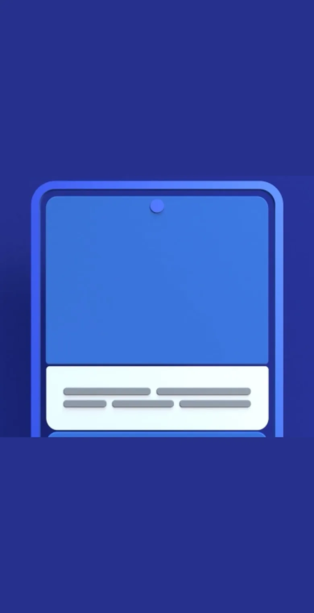
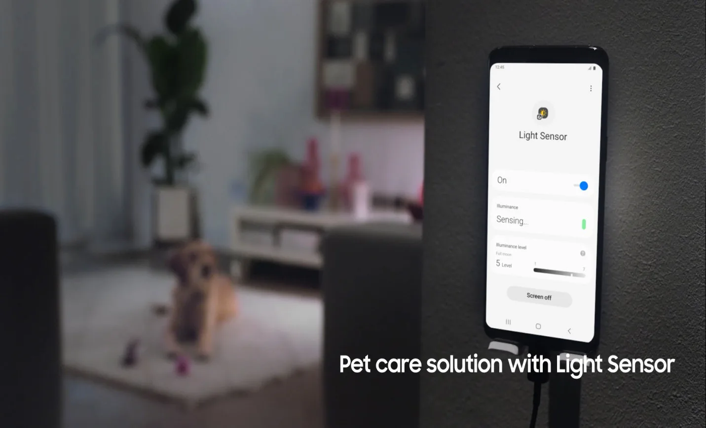
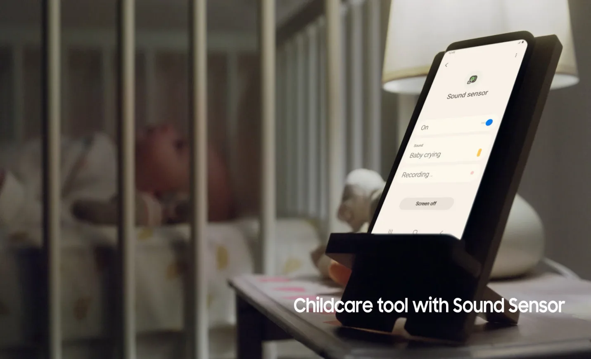

SmartThings
2D Motion Project
Motion for Everyday Living
SmartThings 브랜드 영상의
2D 모션 그래픽과
실사 장면 합성을 맡았습니다.
실제 공간 위에 센서가 주변을 감지하고
기기가 반응하는 과정을 그래픽으로 얹어,
눈에 보이지 않는 IoT 기술이
어떻게 작동하는지 쉽게 따라갈 수 있게 했습니다.We created 2D motion graphics
for SmartThings and blended them
with live action.
Layered over
real spaces, sensors read their
surroundings and devices respond,
making the invisible workings
of IoT easy to follow.
보이지 않는 연결은
어떻게 일상을 바꿀 수 있을까?How Can Invisible Connections
Transform Everyday Life?
SmartThings의 센서는 주변의 밝기와 소리, 생활 환경의 작은 변화까지 감지해
연결된 기기가 알맞게 반응하도록 돕습니다. 모션 그래픽은
이 감지와 연결의 순간을
하나씩 짚어, 기술이 일상에서 만드는 변화를 눈으로 확인할 수 있게 했습니다.SmartThings sensors detect light, sound, and small changes in the home,
helping connected devices respond just right. Our motion graphics trace
each moment
of sensing and connecting, revealing what it changes
in daily life.
Visualizing Sustainable Connections
SmartThings의 연결은 기기를 제어하는 데서 그치지 않고 자원을
아끼는 데까지 이어집니다.
여러 기기가 하나의 시스템으로 묶이고,
업사이클링과 리사이클링이라는 가치로
넓어지는 과정까지 같은
그래픽 언어로 이어 풀어냈습니다.SmartThings connections go beyond device control
to smarter use of resources.
As devices come together
in one system and that link extends to upcycling
and recycling, we carried the story through a single motion graphic language.
Designing Motion Assets
브랜드 영상 곳곳에 쓰이는 모션 그래픽 에셋을 제작했습니다.
센서의 동작과 자동화 과정, 디바이스 간 연결, 인터페이스 요소까지
서비스를 설명하는 핵심 그래픽을
하나의 디자인 시스템으로 정리해,
어느 장면에서 보더라도 같은 SmartThings로 읽히도록 했습니다.We built a set of motion graphic assets used throughout the brand film.
From sensor activity and automation
to device connections and UI elements,
the key graphics were organized into one design system,
so every scene reads unmistakably as SmartThings.
Bringing Motion into Everyday Life
제작한 모션 그래픽을 실제 촬영 장면 위에 합성해, SmartThings가
쓰이는 일상을 그렸습니다.
어두워지면 조명이 켜지고, 반려동물과
아기의 소리를 알아채는 순간처럼 기술이 생활 속 장면으로 이어지는
모습을 보여 주었습니다.We composited our motion graphics into live-action footage
to show SmartThings in daily life, from lights that respond as the room darkens
to sensors that pick up the sound of a pet or a baby.


Connected in Motion
영상 전반에 사용된 모션 요소를 하나의 흐름으로 연결하여 SmartThings의 연결성과 서비스 구조를
직관적으로 전달했습니다.
센서와 인터페이스가 순차적으로 구성되는 움직임을 통해 브랜드의
핵심 경험을 정리하고, SmartThings 로고 애니메이션으로 자연스럽게 마무리했습니다.We linked every motion element into one continuous sequence, walking viewers through SmartThings’
features and services. Sensor animations and interface graphics build steadily across the film, culminating
in the SmartThings logo reveal.